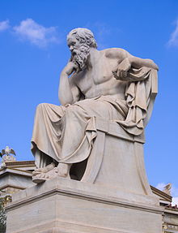
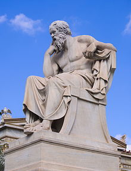

Lafayette College is a small liberal arts school loacted in Easton, Pennsylvania. Much to my mother's dismay, I decided to major in Philosophy. She thought the world had seen enough Greek phisophers but I knew that philosophy could teach me an intangible skill set. I knew if I learned the questions to ask, I could solve any problem I was presented with.
 
